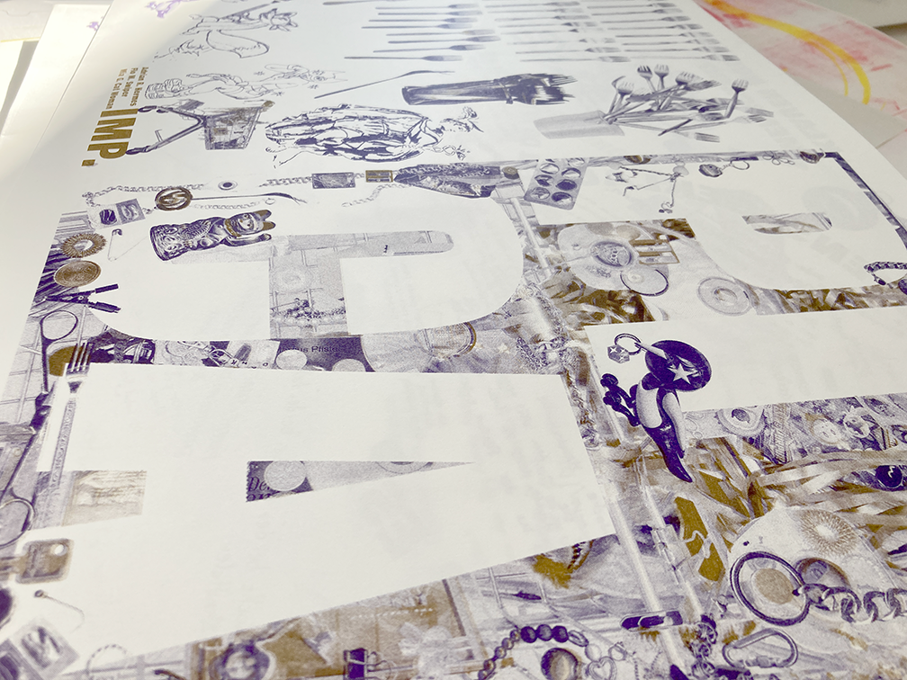
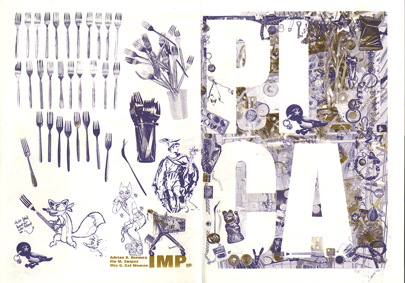
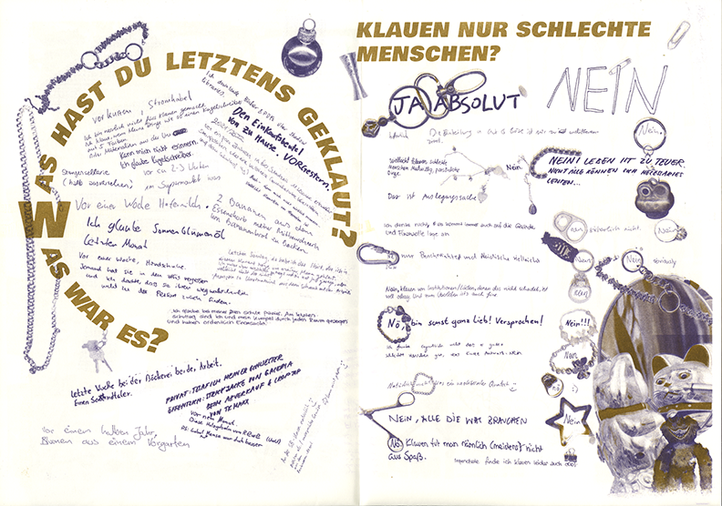
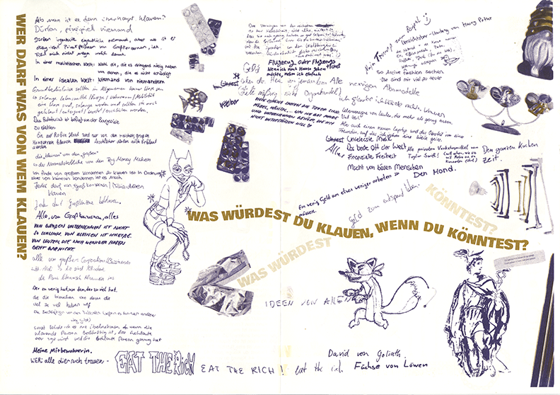
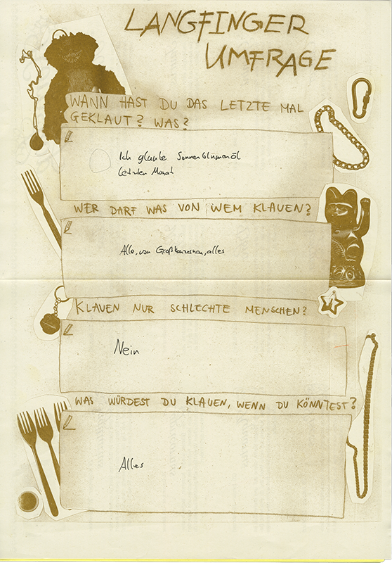
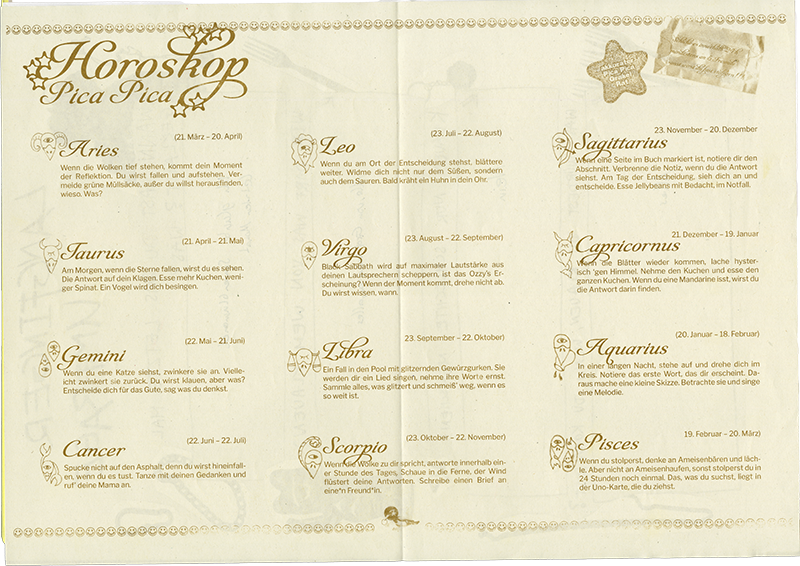

Was würde eine Elster klauen? AAAALLES. Hauptsache alles glitzert und funkelt. Als uns dann die Idee kam, ein Nest aus unserer glänzenden Sammlung zu bauen, nahm das Konzept mehr und mehr Form an. Es war spannend, wie beeindruckend unser Haufen wurde, sobald er zum Nest arrangiert wurde, auch wenn dazwischen Verpackungsmüll war, allein dadurch, wie alles funkelte wirkte es so wertvoll! Wir fingen auch an, uns mehr mit dem Thema Klauen zu beschäftigen. Wenn ich auf unseren Gruppenarbeitsprozess zurückblicke, der doch sehr stressig war mit der Schwierigkeit,
ein für uns sinnvoll und zusammenhängendes Gesamtprojekt zu machen, bin ich überrascht, wie unsere Arbeit von einer kleinen Idee immer größer wurde. Mir gefällt der partizipative Aspekt enorm, weil ich es so spannend finde, Einblicke in die Lebensrealität anderer zu bekommen und zu sehen, wie unterschiedlich aber dennoch auch ähnlich wir uns alle als Menschen doch auch sein können. So spannend und spaßig!! Das Projekt hat mich motiviert,
mehr in eine partizipative Richtung zu arbeiten, seien es Umfragen oder Interviews mit Freunden oder wildfremden Leuten auf der Straße, jetzt habe ich ja schon Erfahrung damit, juhu. Als wir alle Seiten fertig hatten, wollte ich noch unbedingt ein quatschiges Horoskop gestalten, für die Rückseite der Umfrage. Das Schreiben hat mir dabei besonders Spaß gemacht. Fast alle Ideen entstanden in und durch die gemeinsame Gruppenarbeit. Jede brachte Ideen, Ansätze und Lösungen für Probleme mit ein, was eine sehr bereichernde Zusammenarbeit ermöglichte.





